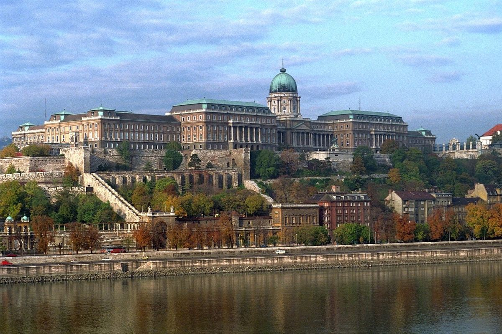
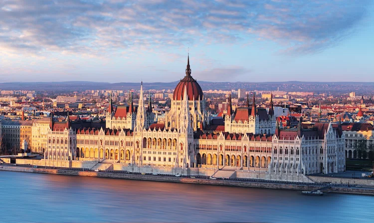
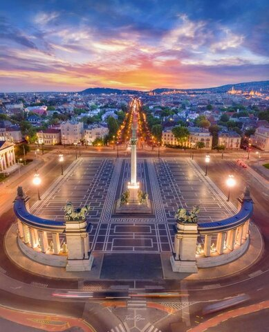
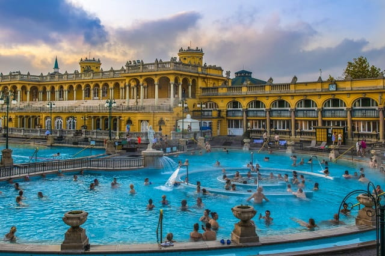

Hungria |

|
Informações Gerais
Capital: Budapeste
Língua oficial da UE: Húngaro
Governo: República paralmentarista unitária
Presidente: Katalin Novák
Primeiro-ministro: Viktor Orbán
Adesão à UE: 1 de maio de 2004
Moeda: forinte húngaro(HUF)
Entrada na UE: 1 de maio de 2004
Schengen: Membro desde 21 de dezembro de 2007
Superfície em milhares de km2: 93 011
População: 9 689 010 habitantes
PIB por habitante em PPC: 75
História
A Hungria tem as suas raízes históricas na ocupação das margens do rio Danúbio pelo povo magiar nos finais do século IX, terras essas que tinham sido ocupadas pelos Romanos (ano 14 a. C. - século IV d. C.), pelos Germanos (século V), pelos Avaros (séculos VI-VIII) e pelo império de Carlos Magno (século IX).
Nos finais do século X, os magiares convertem-se Cristianismo e iniciam a estruturação de um reino forte e independente. No século XII, a Hungria torna-se no principal Estado da Europa centro-Leste.
Em 1241, dá-se o início do fim da Hungria como reino independente, através da grande invasão mongol, que devastou metade da população húngara e deixou um rasto de completa destruição. Depois desta invasão, o país mergulha num período de instabilidade interna. Em 1301 desaparece a dinastia régia Arpad e a Hungria passou a ser dominada pela casa real de Nápoles. Após as invasões dos Turcos otomanos iniciadas no século XIV, a Hungria foi dividida, em 1568, em três partes: uma faixa estreita a ocidente passou para o domínio dos Habsburgos da Áustria, a leste, a Transilvânia ganhou o estatuto de autonomia sob a soberania dos Turcos e, a parte central, passou para o domínio direto dos Turcos.
Em 1848 dá-se uma revolução, liderada por intelectuais húngaros, com o objetivo de obter a independência da Hungria, causada não só pelo descontentamento social como também pelos constantes conflitos étnicos existentes entre os magiares e as outras etnias presentes no território: romenos, eslovacos, sérvios e croatas.
Em 1867, formou-se o império austro-húngaro, que se dissolveu com o fim da Primeira Guerra Mundial e foi acompanhado por um período de grande instabilidade e rutura social, política e económica. Esta situação deixou marcas profundas na sociedade húngara, o que, a par de uma reconstrução difícil e demorada, contribuiu para o crescimento de movimentos radicais de direita. Tal facto esteve na origem da aliança entre a Hungria e a Alemanha de Hitler, através da qual viam a oportunidade de recuperar as áreas perdidas com o Tratado de Trianon. A Hungria foi-se envolvendo cada vez mais no conflito contando para isso com o apoio da maioria dos húngaros que guardavam na memória a má experiência bolchevique ocorrida em finais da década de 20. Contudo, a União Soviética mostrou-se mais forte e fez retroceder as forças germano- húngaras, expulsando-as da Hungria em 4 de abril de 1945.
A presença das forças soviéticas abriu caminho à implantação de um regime comunista primeiro de uma forma discreta, tornando-se depois mais concreta e efetiva em 1949, com a declaração da República Popular da Hungria, processo este que nem a revolução de 1956 conseguiu impedir. Neste ano, subiu ao Poder János Kádár que, embora comunista, conseguiu implementar ao nível da economia e da cultura políticas com algumas características liberais, tornando assim a Hungria no país pró-soviético mais tolerante.
Com o fim do comunismo na União Soviética e o seu desmembramento em 1989, a Hungria aproveitou para se libertar daquela ideologia, iniciando um processo de democratização fundamentado na revisão da Constituição, na qual se estabeleceu a divisão dos poderes, a implantação de um sistema político multipartidário e o consequente abandono do termo popular na designação do país.
As eleições de 1990 levaram ao poder uma coligação de partidos formada pelo Fórum Democrata Húngaro, pelo Partido dos Proprietários Independentes e pelo Partido Democrata Cristão, chefiada pelo líder do Fórum, József Antall. Iniciaram-se uma série de reformas económicas com vista a aproximar a Hungria dos níveis de vida dos países da Europa Ocidental, que se revelaram impotentes, o que resultou numa pesada derrota para os partidos da coligação nas eleições gerais de 1994, que deram uma larga vitória ao Partido Socialista Húngaro, formado por ex-membros do Partido Comunista.
No entanto, para evitar qualquer desconfiança ou receio, por parte dos húngaros e por parte da comunidade internacional, o PSH estabeleceu um acordo com a Aliança dos Democratas Livres com vista à formação de um governo de coligação sob a liderança do socialista Gyula Horn. Desde então, este Governo tentou tornar as reformas económicas mais efetivas, iniciando, ao mesmo tempo, a um processo de revisão constitucional para, num prazo de dois anos, ser aprovada uma nova constituição.
Turismo
A Hungria é muito popular no que toca a destinos turísticos europeus. A cidade mais conhecida e visitada é a sua capital,Budapeste. Budapeste tornou-se, na década de 1990, uma das principais atrações turísticas na Europa Central. O Castelo de Buda, que abriga vários museus, a igreja de Matias e o Edifício do Parlamento são algumas das principais atrações de Budapeste e consequentemente da Hungria. A cidade conta com um vasto leque de museus, 3 casas de ópera e diversas estâncias termais.


O Castelo de Buda, os diques do rio Danúbio e toda a Avenida Andrássy são reconhecidos pela UNESCO como Património Mundial.

Na Hungria existem mais de 1300 nascentes termais, muitas das quais são usadas em spas por todo o país. As fontes termais húngaras e a cultura do spa são promovidas aos turistas. O povo romano foi o primeiro a utilizar águas termais da região, no século I. Desde então os banhos termais têm sido utilizados para higiene, relaxamento e atenuação de dores.
Outras cidades populares na Hungria: Eger; Szeged; Debrecen; Miskolc.
Webgrafia
european-union.europa.eu/principles-countries-history/country-profiles/hungary_pt